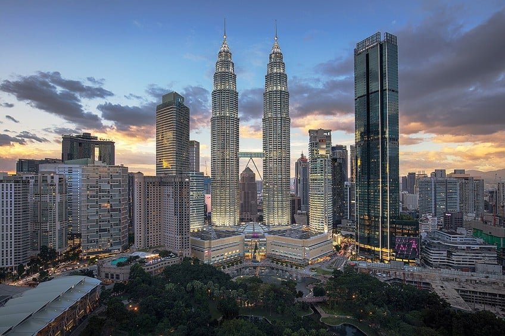

Globalization usually gets talked about as if some countries are simply on the receiving end of change while others are the ones creating it. The reality is a lot more interesting than that. Countries don't just absorb global influences anymore, they adapt them, reshape them and eventually become global influences themselves.
Pieterse explains this by separating the idea of being globalized from globalizing. There is a huge difference between borrowing ideas from somewhere else and actively shaping globalization yourself. China is a good example of this in which they selectively picked what benefitted them the most. This idea of adapting whats best is what makes their braiding process incredibly unique.
Borrowing Doesn't Mean Copying
The idea of "smart borrowing" is really interesting because it isn't stealing. It is the idea of improving on what already exists. Sometimes there is no reason for someone to reinvent the wheel. This makes things quite interesting because things like movies, cultural norms and even food becomes somewhat localized.
"Hybridization also means tweaking and repurposing." Pieterse, Globalization and Culture: Global Mélange, Chapter 8.
This quote essentially puts everything into a nutshell. We learned that hybridization is changing constantly, but it doesnt mean it will stay the same for one specific area of people. It constantly adapts and changes depending on situations.
Globalization Isn't One-Way Traffic
The idea of globalization isn't coined from the West alone. It is just like this entire book, based off everyones cotribution to everything. In the previous chapter, we talked about how ideas don't come from the West. This chapter focuses on how we can tell this difference between being globalized and globalization as a whole.
Malaysia's Own Version of Smart Borrowing
Malaysia has it's ideas of smart borrwing as well. Some pretty interesting examples is the idea of construction and building. Kuala Lumpur is a great city and we needed a monument that would showcase our proof as a developing country towards the future. Instead of sourcing things locally, we decided to hire foreign constructors to help with the construction of the famous twin towers.
Today, everything we see in Kuala Lumpur is an aspect of localized foods, buildings and patterns from different cultures and traditions. Just like China, we selectively pick and localize what benefits the populus. In return, what we give back is respect and honour to those that have laid the foundations of the braiding process of globalization.

Personal thoughts
I think this briaded process is alot more complex that what people usually expect. The idea of giving and receiving cultures may seem like an easy concept, but There is alot of things that go underneath just sharing cultures. This particular chapter is a culmination of everything into one. I think that Malaysia, although not being a super power like China or the United States, still contributes a fair amount of globalization to the world today.
Notes
- Jan Nederveen Pieterse, Globalization and Culture: Global Mélange, Chapter 8, "Globalized, Globalizing." (pp. 103–107)
- https://www.petronastwintowers.com.my/, About the Petronas Twin Towers